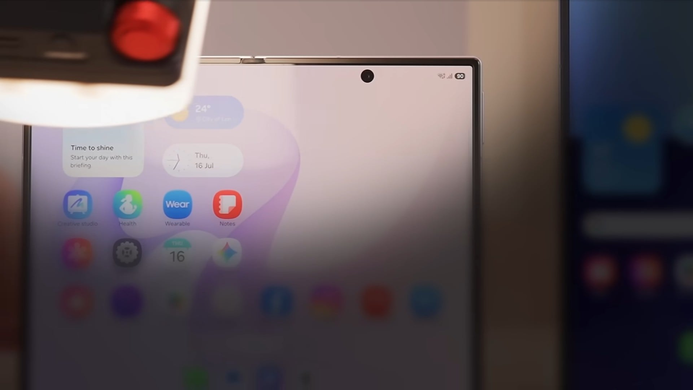
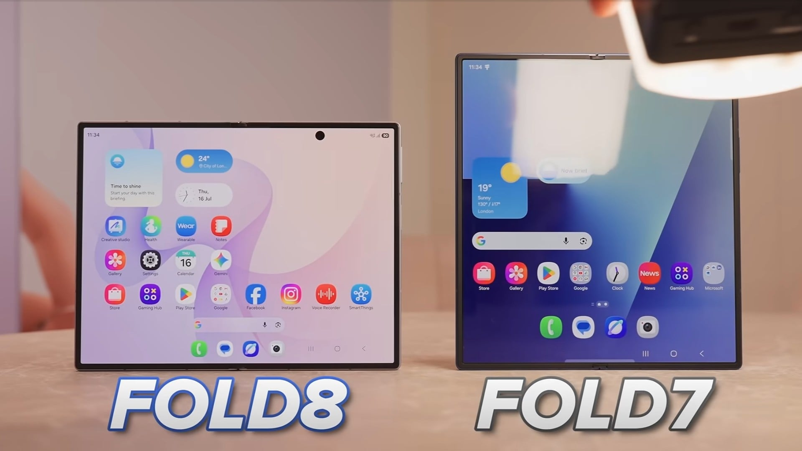

새로운 디자인과 사용자 경험
어제 열린 Unpacked 행사에서 Samsung은 Galaxy Z Fold8과 Galaxy Z Fold8 Ultra를 공개했습니다. 이번 표준 모델은 전작보다 훨씬 더 콤팩트하고 사용하기 즐거운 느낌을 주며, 폴더블 기기로서 한층 세련된 변화를 시도했습니다.
기존의 길고 좁은 디자인 대신 가로 폭이 넓어지고 높이가 낮아진 것이 특징입니다. 이는 단순히 큰 태블릿을 다루는 듯한 느낌을 줄이고, 동영상 시청이나 소셜 미디어 스크롤 등 일상적인 활용에 최적화된 설계를 지향합니다.
디스플레이 및 외관 사양
외부에는 10:16 비율의 5.5인치 Dynamic AMOLED 2X 디스플레이가 탑재되었으며, 내부에는 더 넓은 화면비(4:3)를 가진 7.6인치 대형 스크린이 적용되어 긴 영상 시청 시 검은색 테두리가 줄어들었습니다.
두 화면 모두 HDR을 지원하며 메인 패널 기준 최대 3,000 nits의 밝기를 구현합니다. 또한 반사 방지 코팅이 적용되어 야외에서도 선명한 시인성을 제공합니다. 참고로 이번 모델은 여전히 S Pen을 지원하지 않습니다.
하드웨어 및 내구성 개선
올해 주목할 만한 하드웨어 개선 사항이 몇 가지 있습니다. 반사 방지 코팅 외에도 Samsung은 새로운 "Flex Titanium" 백플레이트를 도입하여 디스플레이 주름을 완화하고, Fold 7보다 더욱 견고한 느낌을 구현했습니다.
무게는 201g으로, Galaxy S26 Ultra보다도 가벼운 삼성의 가장 가벼운 북 스타일 폴더블 기기가 되었습니다. 접었을 때 크기는 123.9 x 81.9 x 9.7mm이며, 펼쳤을 때는 123.9 x 161.4 x 4.5mm입니다. 또한 IP48 등급의 방진 및 방수 기능을 갖췄습니다.
카메라 및 성능 사양
카메라 구성은 다소 아쉽지만, 후면에는 50MP 메인(OIS 포함)과 50MP 초광각 카메라가 탑재된 듀얼 시스템이 적용되었습니다. 전면 디스플레이(커버 및 내부)에는 각각 10MP 전면 카메라가 장착되었습니다.
성능은 Snapdragon 8 Elite Gen 5 for Galaxy 프로세서를 탑재했으며, 저장 용량에 따라 12GB 또는 16GB의 RAM을 제공합니다. 배터리는 실리콘-카본 구조 덕분에 4,800mAh로 늘어났으며, 45W 유선 충전(30분 내 약 63% 충전)과 20W 무선 충전을 지원합니다.
소프트웨어 및 가격 정보
최신 Android 기반의 One UI 9.0이 탑재되며, 7년간의 OS 및 보안 업데이트를 보장합니다. 또한 다양한 Galaxy AI와 Gemini 기반 기능들이 대거 포함되었습니다.
Galaxy Z Fold8은 Lavender, Graphite, Cream 세 가지 색상으로 출시됩니다. 사전 예약은 현재 진행 중이며 배송은 8월 7일부터 시작됩니다. 공식 홈페이지에 공지된 가격은 다음과 같습니다.
- 12GB RAM + 256GB Storage: $1,899
- 12GB RAM + 512GB Storage: $2,099
- 16GB RAM + 1TB Storage: $2,499
총평
Galaxy Z Fold8은 더 넓고 견고해진 디자인과 강력한 Snapdragon 8 Elite Gen 5 프로세서를 탑재하여 실용성을 극대화했습니다. 특히 가벼워진 무게와 향상된 배터리 성능을 통해 삼성의 폴더블 라인업 내에서 경쟁력을 확보했으며, 향후 출시될 Apple의 첫 폴더블 기기에 대응하는 핵심 모델이 될 것으로 보입니다.
新设计与用户体验
在昨日举行的 Unpacked 活动中，Samsung 发布了 Galaxy Z Fold8 和 Galaxy Z Fold8 Ultra。此次推出的标准机型比前代更加紧凑且更具操作乐趣，在折叠设备的设计上尝试了更加精致的变革。
该产品摒弃了以往细长的设计，转而采用更宽的宽度和更低的高度。这一改变旨在减少用户操作时如同在处理大型平板电脑的感觉，而是为了优化视频观看、社交媒体滚动等日常应用场景。
显示屏与外观规格
外屏搭载了 10:16 比例的 5.5 英寸 Dynamic AMOLED 2X 显示屏；内屏则采用了更宽比例（4:3）的 7.6 英寸大尺寸屏幕，从而减少了观看长视频时的黑边。两个屏幕均支持 HDR，且主面板亮度可达 3,000 nits。此外，设备还配备了防反射涂层，确保在户外也能提供清晰的视野。需要注意的是，此款型号仍不支持 S Pen。
硬件与耐用性改进
今年有几项值得关注的硬件改进。除了防反射涂层外，Samsung 还引入了全新的 "Flex Titanium" 背板，旨在减轻显示屏折痕并提供比 Fold 7 更坚固的质感。
机身重量为 201g，是 Samsung 目前最轻的“书本式”折叠设备，甚至比 Galaxy S26 Ultra 还要轻。折叠尺寸为 123.9 x 81.9 x 9.7mm，展开后尺寸为 123.9 x 161.4 x 4.5mm。此外，该机型具备 IP48 等级的防尘防水功能。
摄像头与性能参数
虽然相机配置略显遗憾，但其后置采用了由 50MP 主摄（含 OIS）和 50MP 超广角镜头组成的双摄系统。外屏及内屏均配备了 10MP 前置摄像头。
性能方面，该设备搭载了 Snapdragon 8 Elite Gen 5 for Galaxy 处理器，并根据存储容量提供 12GB 或 16GB 的 RAM。由于采用了硅碳结构，电池容量增加至 4,800mAh，支持 45W 有线充电（30 分钟内可充入约 63% 电量）以及 20W 无线充电。
软件与价格信息
系统搭载基于最新 Android 的 One UI 9.0，并提供长达 7 年的 OS 及安全更新。此外，还包含大量丰富的 Galaxy AI 和基于 Gemini 的功能。
Galaxy Z Fold8 提供 Lavender、Graphite、Cream 三种颜色。目前已开启预售，并将于 8 月 7 日开始发货。官方网站公布的价格如下：
- 12GB RAM + 256GB Storage: $1,899
- 12GB RAM + 512GB Storage: $2,099
- 16GB RAM + 1TB Storage: $2,499
总结
Galaxy Z Fold8 通过更宽阔坚固的设计和强大的 Snapdragon 8 Elite Gen 5 处理器极大提升了实用性。凭借轻量化的机身和增强的电池性能，该产品在 Samsung 折叠系列中极具竞争力。它被视为应对 Apple 未来首款折叠设备的关键核心型号。
新しいデザインとユーザー体験
昨日開催されたUnpackedイベントにて、SamsungはGalaxy Z Fold8およびGalaxy Z Fold8 Ultraを発表しました。今回の標準モデルは前作よりもコンパクトで扱いやすく、フォルダブルデバイスとしてより洗練された進化を遂げています。
従来の細長いデザインから、横幅を広げ高さを抑えた設計へと変更されたのが特徴です。これにより、単に大きなタブレットを操作している感覚を軽減し、動画視聴やSNSのスクロールといった日常的な利用に最適化されています。
ディスプレイと外観仕様
外側には10:16比率の5.5インチDynamic AMOLED 2Xディスプレイを搭載。内側にはより広いアスペクト比（4:3）を持つ7.6インチの大型スクリーンを採用しており、長尺動画の視聴時に発生する黒い縁が減少しました。
両方の画面はHDRに対応し、メインパネルで最大3,000 nitsの輝度を実現します。また、反射防止コーティングの採用により、屋外でも鮮明な視認性を確保しています。なお、本モデルは引き続きS Penをサポートしていません。
ハードウェアと耐久性の向上
今年注目すべきハードウェアの改善がいくつか見られます。反射防止コーティングに加え、Samsungは新しい「Flex Titanium」バックプレートを採用。これによりディスプレイの折り目（クリース）を軽減し、Fold 7よりも堅牢な質感を実現しました。
重量は201gと、Galaxy S26 Ultraよりも軽量で、Samsungのブック型フォルダブルの中で最も軽いモデルとなりました。閉じている際のサイズは123.9 x 81.9 x 9.7mm、開いた状態では123.9 x 161.4 x 4.5mmです。また、IP48等級の防塵・防水機能を備えています。
カメラと性能仕様
カメラ構成にはやや物足りなさが残るものの、背面には50MPメイン（OIS搭載）と50MP超広角カメラのデュアルシステムを採用しました。前面ディスプレイ（カバーおよび内側）にはそれぞれ10MPのフロントカメラを搭載しています。
パフォーマンス面ではSnapdragon 8 Elite Gen 5 for Galaxyプロセッサーを搭載し、ストレージ容量に応じて12GBまたは16GBのRAMを提供します。バッテリーはシリコン-カーボン構造の採用により4,800mAhに増量され、45Wの有線充電（30分で約63%まで充電可能）および20Wのワイヤレス充電をサポートします。
ソフトウェアと価格情報
最新のAndroidベースのOne UI 9.0を搭載し、7年間のOSおよびセキュリティアップデートを保証します。また、多彩なGalaxy AIやGeminiベースの機能が多数搭載されています。
Galaxy Z Fold8はLavender、Graphite、Creamの3色で展開されます。予約受付は現在進行中であり、配送は8月7日から開始されます。公式ホームページに掲載されている価格は以下の通りです。
- 12GB RAM + 256GB Storage: $1,899
- 12GB RAM + 512GB Storage: $2,099
- 16GB RAM + 1TB Storage: $2,499
まとめ
Galaxy Z Fold8は、洗練されたデザインと強力なSnapdragon 8 Elite Gen 5プロセッサーの搭載により、実用性と耐久性を大幅に向上させています。軽量化とバッテリー性能の強化によって競合力を高めており、今後参入するAppleのフォルダブルデバイスに対する重要な対抗モデルとなることが期待されます。
New Design and User Experience
At the Unpacked event held yesterday, Samsung unveiled the Galaxy Z Fold8 and Galaxy Z Fold8 Ultra. The standard model offers a much more compact and satisfying feel compared to its predecessor, representing a sophisticated evolution in foldable device design.
Moving away from the previous long and narrow design, the new model features an increased width and reduced height. This shift aims to move away from the feeling of handling a large tablet and instead focuses on a design optimized for everyday use, such as watching videos or scrolling through social media.
Display and Exterior Specifications
The exterior features a 5.5-inch Dynamic AMOLED 2X display with a 10:16 aspect ratio, while the interior utilizes a larger 7.6-inch screen with a wider 4:3 aspect ratio, which reduces black borders when watching long videos.
Both screens support HDR and can achieve a peak brightness of up to 3,000 nits on the main panel. Additionally, an anti-reflection coating has been applied to ensure clear visibility even outdoors. Note that this model still does not support the S Pen.
Hardware and Durability Improvements
There are several notable hardware improvements this year. In addition to the anti-reflection coating, Samsung introduced a new "Flex Titanium" backplate to reduce display creases and provide a more robust feel than the Fold 7.
The device weighs 201g, making it Samsung's lightest "book-style" foldable device—even lighter than the Galaxy S26 Ultra. The dimensions are 123.9 x 81.9 x 9.7mm when folded and 123.9 x 161.4 x 4.5mm when unfolded. It also features an IP48 rating for dust and water resistance.
Camera and Performance Specifications
While the camera configuration is somewhat modest, the rear features a dual system consisting of a 50MP main camera (with OIS) and a 50MP ultra-wide camera. The front displays (both cover and internal) are equipped with 10MP cameras respectively.
The device is powered by the Snapdragon 8 Elite Gen 5 for Galaxy processor, offering either 12GB or 16GB of RAM depending on the storage capacity. Thanks to a silicon-carbon structure, the battery has been increased to 4,800mAh, supporting 45W wired charging (reaching approximately 63% in 30 minutes) and 20W wireless charging.
Software and Pricing Information
The device runs on One UI 9.0 based on the latest Android version, guaranteeing seven years of OS and security updates. It also includes a wide range of Galaxy AI and Gemini-based features.
The Galaxy Z Fold8 is available in three colors: Lavender, Graphite, and Cream. Pre-orders are currently underway, with shipping starting on August 7. The official prices announced on the website are as follows:
- 12GB RAM + 256GB Storage: $1,899
- 12GB RAM + 512GB Storage: $2,099
- 16GB RAM + 1TB Storage: $2,499
Summary
The Galaxy Z Fold8 maximizes practicality through a wider, more durable design and the powerful Snapdragon 8 Elite Gen 5 processor. With its lighter weight and improved battery performance, it strengthens Samsung's position in the foldable market as a key competitor against upcoming rival devices.

